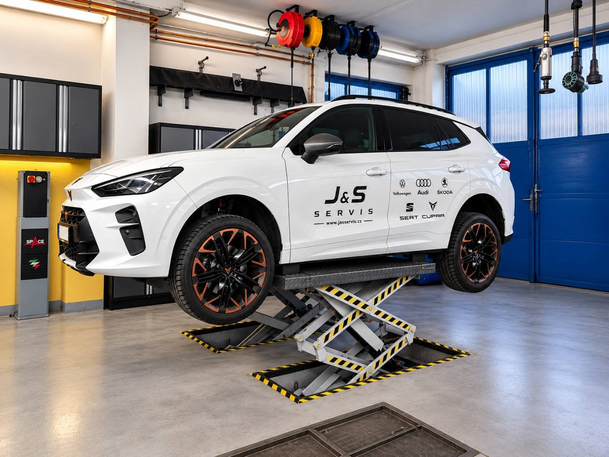

J&S SERVIS · TỪ NĂM 1994
Xưởng dịch vụ độc lập
VW Group
tại Statenice gần Praha
Chẩn đoán ODIS, chẩn đoán chuyên sâu, đo kiểm chuyên sâu, quy trình của nhà sản xuất và tư vấn cho khách hàng.
Đặt lịch+420 605 399 448
TỪ XƯỞNG CỦA CHÚNG TÔIĐo kiểm để xác định nguyên nhân.
Kiểm tra hệ thống làm mát · VAS 531 009
DỊCH VỤ ĐỘC LẬP CHO CÁC HÃNG
CHUYÊN MÔN CHO XE CỦA BẠN
Từ chẩn đoán đến giải pháp


Hiểu rõ chiếc xe của bạn
Chu kỳ bảo dưỡng, đèn cảnh báo và mã lỗi. Bài viết kỹ thuật theo hãng xe.
Mở tư vấn lái xe
J&S SERVIS · STATENICE GẦN PRAHA
Chăm sóc xe của bạn chu đáo hơn
Giúp bạn bớt lo lắng
Dịch vụ chuyên nghiệp dành cho xe Volkswagen, Audi, Škoda, SEAT và CUPRA kể từ 1994.
Quy trình nhà sản xuấtĐo kiểm chuyên mônTư vấn trực tiếp
Giới thiệu xưởng TRẢI NGHIỆM KHÁCH HÀNG
Đánh giá của khách hàng
Đánh giá trên Google và Firmy.cz được hiển thị riêng theo từng nguồn.
HÃY HẸN LỊCH BẢO DƯỠNG
Xe của bạn cần gì?
Để trao đổi nhanh hơn, vui lòng chuẩn bị VIN, số km hiện tại và mô tả ngắn về công việc cần làm hoặc sự cố. Lịch hẹn và phạm vi dịch vụ được xác nhận sau khi thống nhất.
Gửi email cho xưởngKralupská 90
Chỉ đường Statenice – Černý Vůl, 252 62
Thứ Hai–Thứ Sáu · 9:00–18:00